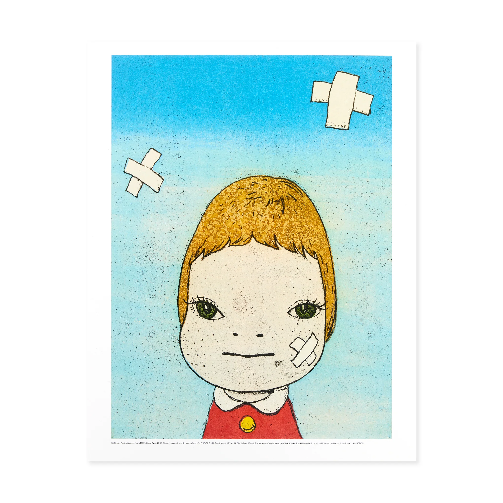
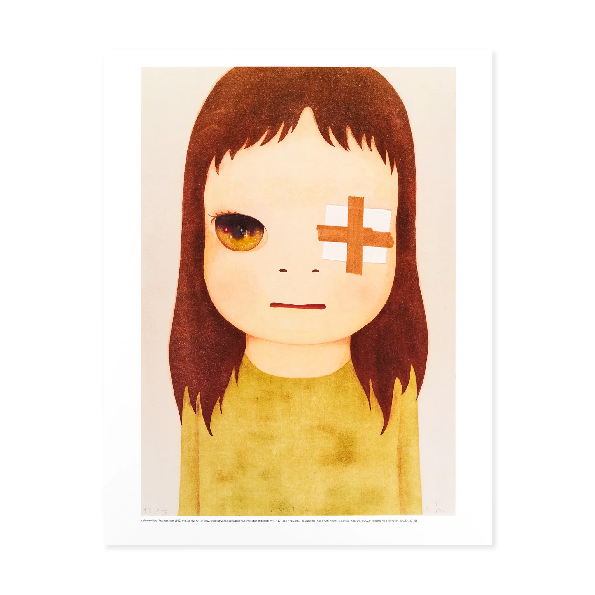
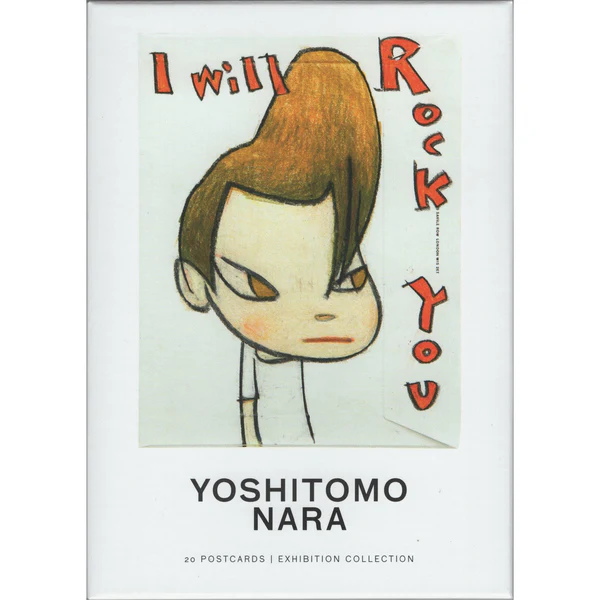
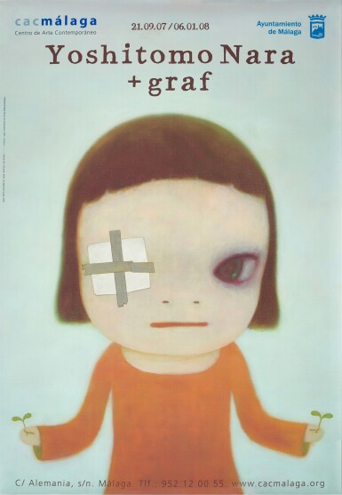
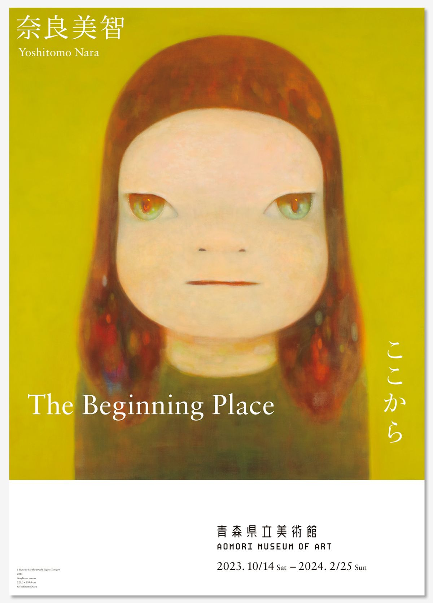
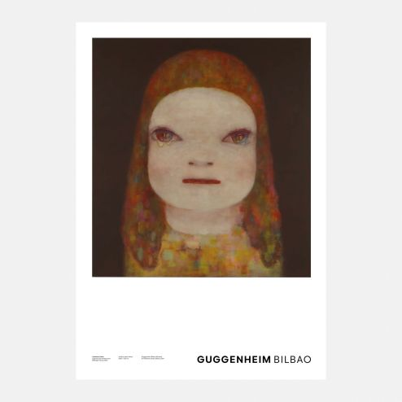
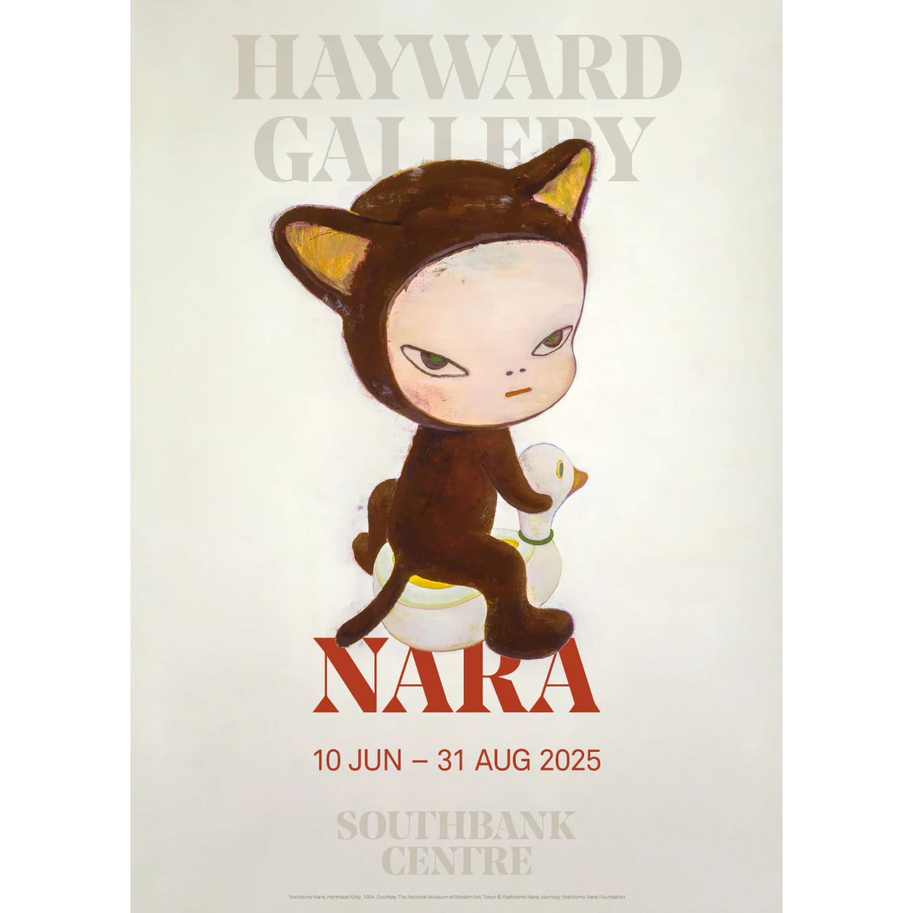
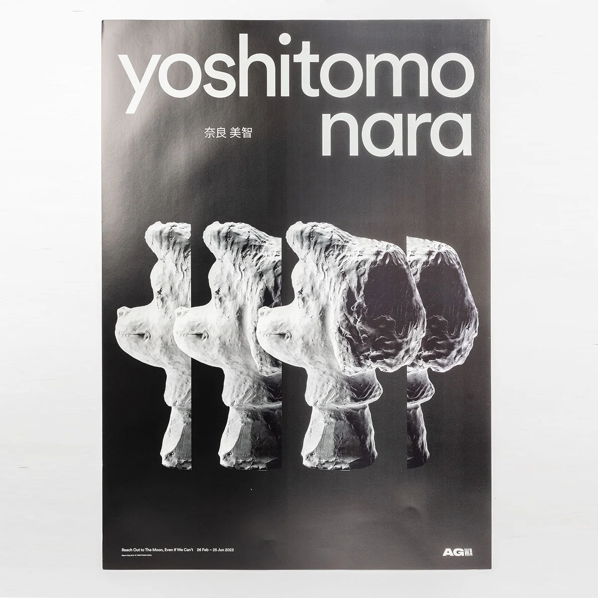
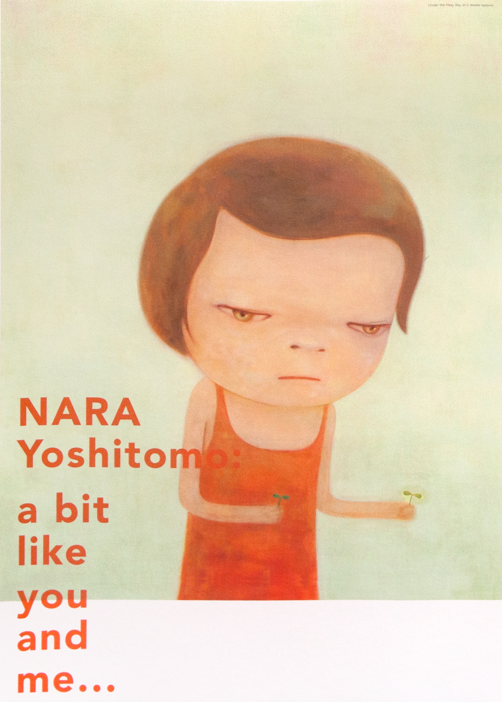

Gallery
Gallery
Explore a selection of posters, prints and exhibition graphics by Yoshitomo Nara.

This print features a reproduction of Yoshitomo Nara’s Green Eyes (2002), an artwork in MoMA's collection. This reproduction is printed using state-of-the-art printing technology and materials. The high-density pigments provide rich and long-lasting colors and tonalities.

This print features a reproduction of Yoshitomo Nara’s OH! MY GOD! I MISS YOU! (2001), an artwork in MoMA's collection. This reproduction is printed using state-of-the-art printing technology and materials.

This print features a reproduction of Yoshitomo Nara’s Untitled (Eye Patch) (2001), an artwork in MoMA's collection. This reproduction is printed using state-of-the-art printing technology and materials.

Twenty postcards are featured in the Yoshitomo Nara folio, published on the occasion of the exhibition Yoshitomo Nara at LACMA.

YOSHITOMO NARA b. 1959. Inkjet and offset print. Executed in 2007-8

Poster. Year: 2023. Category: Exhibitions Type: Poster.

Poster featuring a reproduction of the painting by Yoshitomo Nara, Midnight Tears, 2023.

Yoshitomo Nara original exhibition poster. First edition poster printed on 150 gsm paper.

Exhibition poster featuring Yoshitomo Nara's work Harmless Kitty, 1994.

From a series of six poster print exclusive to the AGWA Exhibition. Printed on high quality 170 GSM silk matt.

Choose from a series of six poster print exclusive to the AGWA Exhibition. Printed on high quality 170 GSM silk matt.

Released at Yoshitomo Nara's critically acclaimed exhibition “A bit like you and me...” at the Yokohama Museum of Art 2012.

The collection includes posters, T-shirts, hoodies, caps, and tote bags.